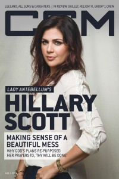

CMnexus
:
Contemporary Christian culture, music, and media.
Magazines
Profiles
Dove Awards
cmnexus.org
CM
nexus
→
Profiles
→
S
Hillary Scott
On the cover

1 August 2016
CCM Digital
Media coverage
1 Aug 2016 in
CCM Digital
"Girl On A Mission"
Albums & reviews:
2016:
Love Remains
15 Jul 2016 in
CCM Digital
, by
Andy Argyrakis
Sep 2016 in
Worship Leader
, by
Daryl Bryant
Award Summary
(
Nominations
/
Wins
)
Dove Awards
2017 Dove Awards
Song
: "Thy Will"
Songwriter
2022 Dove Awards
Bluegrass/Country/Roots Recorded Song
: "Mamas"
Grammy Awards
2016 Grammy Awards
Best Contemporary Christian Music Album
:
Love Remains
Best Contemporary Christian Music Performance/Song
: "Thy Will"
2022 Grammy Awards
Best Contemporary Christian Music Performance/Song
: "For God Is With Us"
CMnexus
(noun)
The magazine index
of modern music
and Christianity
© 2011 CMnexus. Last updated August 2025.
Contact:
Rants and other correspondence to:
editor -AT- cmnexus
-DØT- org
About